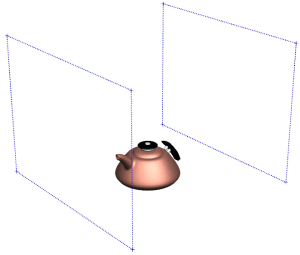

设置摄像机
-
打开 des09_teapot_2，如果需要，开始建模应用模块。

-
展开部件导航器中的摄像机节点。
初始创建的摄像机名称将以当前视图名称来命名，如果从一个视图中创建了多个摄像机，则将再名称后加上数字以示区别。
-
点击视图工具条上的适合窗口
 。
。 -
在部件导航器中，注意到有一些摄像机旁边带有时钟图标 ，表明它已过时。
这是因为您更改了摄像机的初始方位。
-
在摄像机节点下方，右击正三轴测图并点击捕捉视图。
因为您已经捕捉了当前的摄像机方位，这个摄像机旁边将用一个绿色复选标记替代过时图标。